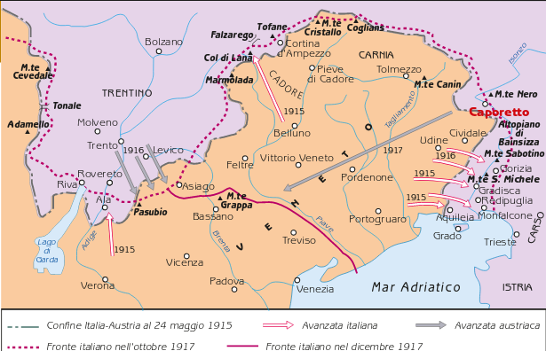

L’offensiva austro-tedesca
In un primo tempo, i tedeschi si limitarono ad aggregare sette loro divisioni scelte all’esercito asburgico; poi, decisero di assumere il diretto comando delle operazioni. Il piano tedesco prevedeva una massiccia offensiva nell’area di Caporetto (oggi Kobarid, in Slovenia), un villaggio situato a nord di Gorizia, tra i due avamposti di Plezzo e Tolmino. Tuttavia, applicando una tattica che si stav a già collaudando in Francia, l’assalto sarebbe stato condotto non da una grande massa di truppe concentrate in un unico settore, ma da vari reparti di medie dimensioni, il cui compito era di infiltrarsi in profondità entro le file del nemico, per poi colpirne la prima linea alle spalle, dopo averla aggirata e circondata. Questa nuova tattica aveva già dato discreti risultati sul fronte occidentale, ma non era risultata vincente, perché l’esercito inglese e quello francese erano organizzati su varie linee di difesa e dotati di buone riserve. Sul fronte italiano, la tattica tedesca dell’infiltrazione risultò invece devastante, dal momento che lo schieramento imposto da Cadorna al suo esercito era tutto sbilanciato in avanti, in direzione offensiva, mentre le riserve erano scarse e mal dislocate. Nei giorni immediatamente precedenti l’inizio dell’attacco, il generale Cadorna fu informato da alcuni disertori austriaci dell’imminente offensiva nemica, ma non prestò fede a quelle notizie. L’esercito italiano, pertanto, all’alba del 24 ottobre 1917 fu colto completamente alla sprovvista, allorché le prime linee vennero investite da un violentissimo bombardamento di artiglieria (quattro ore con granate a gas; altre due ore di fuoco con granate esplosive), che preparò l’avanzata (o meglio, l’infiltrazione in profondità) della fanteria austro-tedesca. All’inizio, il comando italiano non valutò correttamente l’entità dell’attacco nemico. Il generale Badoglio, responsabile dell’artiglieria italiana, non seppe opporre un valido e tempestivo sbarramento di fronte all’avanzata austro-tedesca, mentre Cadorna diramò le prime direttive solo tra le 18 e le 23. L’intero comando rimase per qualche giorno indeciso sul da farsi, emanando ordini contraddittori e confusi. I tedeschi, pertanto, ottennero un successo superiore a ogni loro più ottimistica aspettativa : nei giorni seguenti il 24 ottobre, gli italiani ebbero perdite per 11 000 morti, 30 000 feriti, 300 000 prigionieri, 3000 cannoni e 300 000 fucili. L’esercito italiano fu costretto a ritirarsi disordinatamente, incalzato dai nemici, per circa 140 chilometri: solo lungo la linea del fiume Piave fu possibile ricostruire un efficace sistema difensivo. L’episodio più critico dell’intera ritirata si ebbe al fiume Tagliamento, nel momento in cui migliaia di soldati e di mezzi si accalcarono sui pochi ponti che permettevano il passaggio. L’ingorgo delle vie di comunicazione, in quella circostanza, ebbe dimensioni inaudite e potrebbe essere paragonato al collasso della circolazione su una grande autostrada dei giorni nostri. Il parallelo – si badi – è meno assurdo diquanto si pensi: in entrambi i casi siamo di fronte a un fenomeno (la guerra, nel 1917; il turismo, ai giorni nostri) di massa, che mobilita e coinvolge migliaia di persone, secondo modalità tipiche di una moderna società industrializzata e dunque sconosciute nei secoli del passato. Entità e cause della disfatta
Le province di Udine, Belluno, Treviso, Vicenza e Venezia furono occupate dagli austro-tedeschi, che arrivarono a soli 25 chilometri dal capoluogo veneto. Mentre 600 000 profughi abbandonarono le loro case, circa un milione di persone si trovò sotto un regime di occupazione straniera, in un territorio che comprendeva 20 000 chilometri quadrati di territorio nazionale. La dominazione militare austriaca fu estremamente dura, per il fatto che l’esercito occupante doveva ricavare dalle regioni in cui si era installato tutte le risorse alimentari che gli servivano per sopravvivere; i territori italiani invasi, pertanto, vennero sottoposti dapprima a razzie disorganizzate e poi a un sistematico processo di spoliazione. Almeno 30 000 civili morirono per denutrizione, mentre un numero imprecisabile (ma sicuramente elevato) di donne fu vittima di violenza sessuale, come già era avvenuto in Belgio nel 1914. Cadorna, nel bollettino di guerra emanato alle ore 13 del 28 ottobre, cercò di scaricare le responsabilità del disastro sulle truppe: «La mancata resistenza di reparti della 2a armata, vilmente ritiratisi senza combattere o ignominiosamente arresisi al nemico, ha permesso alle forze au- stro-germaniche di rompere la nostra ala sinistra sulla fronte Giulia. Gli sforzi valorosi delle altre truppe non sono riusciti a impedire all’avversario di penetrare sul sacro suolo della Patria». Il comandante presentava la disfatta come la conseguenza fatale di una specie di sciopero militare, che si sarebbe verificato in prima linea, secondo modalità simili a quelle che, in quello stesso anno, avevano paralizzato e dissolto l’esercito russo. In effetti, moltissimi soldati – moralmente e fisicamente esausti, dopo due anni di micidiali assalti frontali – avevano gettato le armi. Tuttavia, i casi di rivolta aperta contro gli ufficiali, durante la rotta di Caporetto furono pochissimi; inoltre, non si può in alcun modo documentare che il disfattismo dei soldati sia stato indotto dalla propaganda socialista o dalle parole di papa Benedetto XV, che il 1° settembre 1917 aveva definito la guerra «inutile strage», come molti conservatori presero a sostenere, al fine di proteggere l’onore dell’esercito. In realtà, il vero responsabile del crollo delle truppe – là dove si verificarono episodi di rassegnazione, di resa o di fuga in massa – fu soprattutto la sistematica e spietata strategia cadorniana delle “spallate”.
Il dibattito politico dopo Caporetto
Anche se le gravissime negligenze dei vertici militari italiani (di Badoglio, innanzi tutto, e poi dello stesso Cadorna) furono ovviamente taciute e coperte – sia dai bollettini di guerra che dalle altre dichiarazioni ufficiali –, l’8 novembre 1917 Cadorna venne esonerato; il comando supremo dell’esercito italiano fu assegnato al generale Armando Diaz, che avrebbe assunto un atteggiamento militare di segno opposto rispetto al suo predecessore. Del resto, date le ingenti perdite di materiale, la forza d’urto dell’esercito italiano era gravemente indebolita e andava in pratica ricostruita da capo. A livello politico, poi, la disfatta di Caporetto provocò un vero terremoto. Mentre la presidenza del Consiglio veniva assunta da Vittorio Emanuele Orlando, i vari schieramenti politici cercarono di precisare le loro posizioni. L’ala maggioritaria del partito socialista si rifiutò di uscire dal proprio isolamento, cioè non abbandonò l’atteggiamento di diffidenza e di freddezza che si esprimeva nella formula «né aderire, né sabotare». Solo un piccolo gruppo di dirigenti sindacali (come Rinaldo Rigola, del la CGL, cioè la Confederazione generale del lavoro) e di deputati (come Claudio Treves e Filippo Turati) affermò che, dopo Caporetto, il conflitto diventava davvero la guerra di tutti gli italiani: nell’animo di ciascuno – scrisse Treves in un articolo firmato anche da Turati, pubblicato nel novembre 1917 – doveva ormai «campeggiare soltanto l’atroce dolore per il danno e per il lutto e la ferma volontà di combattere, di resistere fino all’estremo». Sull’altro fronte, tra gli interventisti, si registra la crescita di una serie di atteggiamenti che subito dopo la fine della guerra sarà fatta propria dal movimento fascista. Tutti, compresi gli interventisti democratici, guardarono al Parlamento con diffidenza e timore; poiché la Camera era ancora composta dagli stessi deputati del 1915, la maggior parte dei qua- li non avrebbe, a suo tempo, voluto la guerra, si temeva che Giolitti, o qualcuno dei suoi, approfittasse della gravità della situazione per tornare al potere e, peggio ancora, stipulare una pace separata con la Germania e l’Austria-Ungheria. La gravità della situazione era tale – si scriveva su tutti i giornali – che il potere avrebbe dovuto essere saldamente nelle mani di un uomo solo, determinato a resistere a oltranza, fino alla vittoria. Inoltre, anche gli interventisti più legati alla tradizione risorgimentale dimenticarono il valore del concetto di libertà: richiamandosi a Robespierre e alla Rivoluzione francese, invocarono da parte del governo misure repressive durissime nei confronti di chiunque proponesse di negoziare o, peggio ancora, invocasse la rivoluzione. In sintesi, sia nella valutazione del ruolo del Parlamento, sia nel campo dei diritti e delle libertà individuali, la maggior parte degli interventisti finì per schierarsi su posizioni molto simili a quelle dei nazionalisti. Anche sugli scopi ultimi del conflitto, infine, l’illusione democratica della guerra finalizzata a liberare tutte le nazionalità finì per lasciare il posto al sacro egoismo: dopo Caporetto, gli immani sforzi compiuti dalla nazione italiana dovevano essere adeguatamente compensati con ampie concessioni territoriali e non contava nulla il fatto che, sul confine orientale, le aree rivendicate fossero abitate in maggioranza da slavi. La guerra democratica, dopo Caporetto, lasciò il posto a rivendicazioni imperialistiche sempre più vaste ed esplicite.
L’ultimo anno di guerra
Per prima cosa, il nuovo governo Orlando si preoccupò di individuare le principali necessità economiche del Paese, bisognoso di urgenti e cospicue forniture di grano e di carbone. Nell’agosto 1917, due mesi prima di Caporetto, si erano infatti verificati dei gravi tumulti a Torino proprio a causa della carenza di pane e farina; per reprimere la rivolta, fu necessario fare uso degli autoblindo e delle mitragliatrici, che provocarono 50 morti e più di 200 feriti. Era evidente che l’Italia, per continuare la guerra, doveva rafforzare il proprio fronte interno, cioè evitare che il malcontento diffuso tra le masse, per l’aumento del costo della vita e per la carenza di generi di prima necessità, toccasse il punto di non ritorno, che era già stato superato in Russia nel febbraio 1917 e che sarebbe stato raggiunto anche in Germania, nel novembre 1918. Orlando ottenne dagli Alleati regolari rifornimenti alimentari e ingenti crediti, capaci di rilanciare l’economia di guerra italiana. La produzione di acciaio e di ghisa aumentò in modo vertiginoso, permettendo finalmente all’esercito italiano di avere un numero di cannoni adeguato alle esigenze della guerra. Le industrie torinesi FIAT riuscirono da sole, nel 1918, a consegnare ben 25 000 automezzi. Per diversi mesi, il generale Diaz assunse un atteggiamento tattico puramente difensivo, preoccupandosi unicamente di respingere gli attacchi condotti dagli austriaci contro la linea del Piave. La capacità offensiva dell’esercito austro-ungarico, però, fu notevolmente ridotta dopo il trasferimento sul fronte francese delle unità tedesche che avevano avuto il ruolo decisivo nella battaglia di Caporetto; di conseguenza, le truppe italiane riuscirono a contenere tutte le offensive del nemico. Nell’autunno del 1918, la situazione della Germania e dell’Austria-Ungheria era ormai disperata; rendendosi conto delle difficoltà dell’esercito avversario, ormai vicino al collasso, Diaz ordinò l’attacco il 26 ottobre: nella regione di Vittorio Veneto nel Trevigiano, le truppe austro-ungariche non riuscirono a resistere e si disgregarono, dando luogo a vasti e gravi fenomeni di diserzioni di massa e di ammutinamento, che videro come protagonisti soprattutto i soldati slavi e ungheresi, ormai decisi a ottenere l’indipendenza per le proprie nazioni. Il 3 novembre, l’Austria-Ungheria firmava la resa, che prevedeva per il giorno seguente – 4 novembre–la cessazione delle ostilità. L’Italia usciva vincitrice dalla guerra, che però le era costata 680 000 morti, mezzo milione di mutilati o di invalidi, e più di un milione di feriti. Per di più, l’Italia che veniva fuori dal conflitto era ancor più divisa di quando l’aveva iniziato. Per i nazionalisti, quanto fu concesso all’Italia dopo la Conferenza di pace non era assolutamente proporzionato al prezzo pagato per conseguirlo; viceversa, i socialisti videro in quei risultati decisamente deludenti la conferma della loro idea secondo cui l’Italia avrebbe dovuto restare fuori dal conflitto. Insomma, il clima di scontro, al limite della aperta lotta civile, che aveva caratterizzato la primavera del 1915, si ripropose in tutto e per tutto nel dopoguerra, fornendo il terreno di coltura ideale per la nascita del movimento fascista.